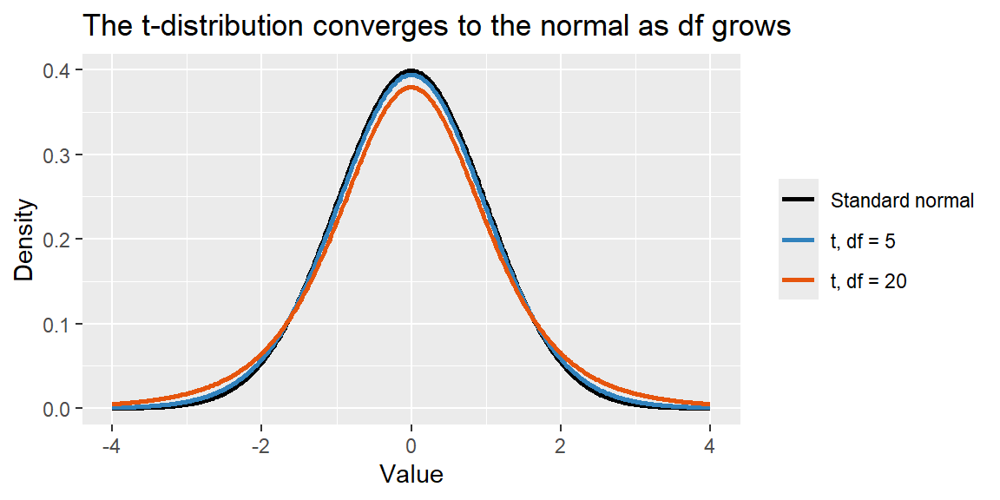

13 Week 5: Confidence Intervals for a Mean
13.1 From Proportions to Means
Last section built a confidence interval around \(\hat{p}\) for a categorical outcome. This section does the same thing for a quantitative outcome, average order value, average handle time, average fill weight, using the sample mean \(\bar{x}\). The overall shape is identical: \[ \begin{align*} \text{point estimate} \;&\pm\; \text{margin of error}\\ \bar{x} \;&\pm\; \text{(critical value)} \times \text{standard error} \end{align*} \] But there’s a wrinkle here that didn’t come up for proportions, and it’s worth understanding why before we get to the formula.
13.2 Estimating the Standard Error of \(\bar{x}\)
From Chapter 9, the standard error of \(\bar{x}\) is \(\sigma/\sqrt{n}\), where \(\sigma\) is the population standard deviation. For proportions, the standard error formula, \(\sqrt{p(1-p)/n}\), only involved the parameter \(p\) we were already trying to estimate, so substituting \(\hat{p}\) in its place was a clean fix. For a mean, \(\sigma\) is a genuinely separate, unknown parameter, not something already tied to \(\mu\). In practice, we estimate it with the sample standard deviation \(s\), giving an estimated standard error: \[ \text{SE}_{\bar{x}} = \frac{s}{\sqrt{n}} \]
This substitution, using \(s\) in place of the true \(\sigma\), introduces extra uncertainty beyond what the normal distribution accounts for, especially when the sample is small. To handle that extra uncertainty honestly, we need a different reference distribution.
13.3 The \(t\)-Distribution
The \(t\)-distribution looks like the standard normal distribution (bell-shaped, centered at 0), but with heavier tails, reflecting the added uncertainty of having estimated \(\sigma\) with \(s\) rather than knowing it exactly. How much heavier the tails are depends on the degrees of freedom, \(df = n-1\): with a small sample, the tails are noticeably heavier than the normal curve, but as \(n\) grows, the \(t\)-distribution converges to the standard normal.
Because its tails are heavier, using a \(t\) critical value in place of a \(z\) critical value produces a wider margin of error, appropriately wider, since we’re accounting for the extra uncertainty of not knowing \(\sigma\) exactly. With a small sample, this correction matters a lot; with a large sample, \(t\) and \(z\) critical values are nearly identical.
13.4 Confidence Interval for a Mean
The confidence interval for \(\mu\) uses a \(t\) critical value, \(t_{\alpha/2, \, df}\), with \(df = n-1\): \[ \bar{x} \;\pm\; t_{\alpha/2, \, df}\,\frac{s}{\sqrt{n}} \]
To use this method, you need a randomly collected sample, and either an approximately normal population or a large enough \(n\) for the Central Limit Theorem to make the sampling distribution of \(\bar{x}\) approximately normal on its own.
NoteThis method is fairly robust to non-normality
The \(t\)-interval assumes the population is approximately normal, but in practice it performs reasonably well even when that assumption is modestly violated, especially as \(n\) grows. The main exception is when the data contain extreme outliers: outliers distort both the sample mean itself and the standard deviation used to build the interval, so it’s worth checking a histogram or boxplot for anything unusual before trusting the result, particularly with a small sample.
ExampleExample 5.3: A confidence interval for average order value
A retailer samples \(n=25\) recent orders and finds a sample mean order value of \(\bar{x}=\$71.50\) with a sample standard deviation of \(s=\$42\). Build a 95% confidence interval for the true mean order value, \(\mu\).
With \(df = 25-1 = 24\), the 95% critical value is \(t_{0.025, \, 24} = 2.064\) (found using software, shown below). The standard error is \[ \text{SE}_{\bar{x}} = \frac{42}{\sqrt{25}} = 8.4 \] The margin of error is \[ 2.064 \times 8.4 \approx 17.34 \] The 95% confidence interval for \(\mu\) is \[ 71.50 \pm 17.34, \quad \text{or} \quad (54.16, \, 88.84) \] We would report: “We are 95% confident that the true mean order value is between $54.16 and $88.84.”
13.5 Computing \(t\)-Based Confidence Intervals in R and Excel
ExampleExample 5.4: The order-value interval in R and Excel
x_bar <- 71.50
s <- 42
n <- 25
df <- n - 1
se <- s / sqrt(n)
t_star <- qt(0.975, df = df)
lower <- x_bar - t_star * se
upper <- x_bar + t_star * se
c(lower, upper)[1] 54.16325 88.83675qt(0.975, df = 24) plays the same role for the \(t\)-distribution that qnorm(0.975) played for the standard normal in Chapter 12. If you have the raw data rather than just the summary statistics, R’s t.test() computes the same interval directly:
t.test(order_values)$conf.intIn Excel, the critical value comes from T.INV.2T(), which returns the two-tailed critical value directly (no need to halve \(\alpha\) yourself, unlike NORM.S.INV()):
=71.50 - T.INV.2T(0.05, 24) * (42/SQRT(25)) ' lower bound
=71.50 + T.INV.2T(0.05, 24) * (42/SQRT(25)) ' upper bound13.6 When the Sample Is Large: \(t\) vs. \(z\)
As degrees of freedom grow, the \(t\)-distribution’s critical values get closer and closer to the corresponding \(z\) critical values. By around \(n=30\) or so, the difference is usually small enough not to matter much in practice, though using \(t\) is always technically correct whenever \(\sigma\) is estimated from the sample, which is nearly always the case in real business data.
13.7 Recap
| Keyword | Definition |
|---|---|
| Standard error of \(\bar{x}\) (estimated) | \(\text{SE}_{\bar{x}} = s/\sqrt{n}\), using the sample standard deviation in place of the unknown \(\sigma\). |
| \(t\)-distribution | A bell-shaped distribution with heavier tails than the normal, indexed by degrees of freedom; used when \(\sigma\) is estimated by \(s\). |
| Degrees of freedom | \(df = n - 1\) for a confidence interval on a single mean. |
| Confidence interval for \(\mu\) | \(\bar{x} \pm t_{\alpha/2, \, df}\,(s/\sqrt{n})\). |
13.8 Check Your Understanding
NoteProblems
A call center samples 16 calls and finds a mean handle time of \(\bar{x}=7.2\) minutes with \(s=2.1\) minutes. Using \(t_{0.025, 15} = 2.131\), construct a 95% confidence interval for the true mean handle time.
Explain, in your own words, why the \(t\)-distribution has heavier tails than the standard normal distribution, and why that difference shrinks as \(n\) grows.
A researcher mistakenly uses \(z_{0.025}=1.96\) instead of the correct \(t_{0.025, \, 9} = 2.262\) to build a confidence interval from a sample of \(n=10\). Will the resulting interval be too wide or too narrow? Explain.
A production analyst samples 36 units and finds \(\bar{x}=100.4\) with \(s=5.0\). Using
qt(0.995, df = 35)\(\approx 2.724\), construct a 99% confidence interval for the true mean.
TipSolutions
\(\text{SE} = 2.1/\sqrt{16} = 0.525\). Margin of error \(= 2.131 \times 0.525 \approx 1.119\). The 95% confidence interval is \(7.2 \pm 1.119\), or \((6.08, \, 8.32)\) minutes.
The \(t\)-distribution has heavier tails because it accounts for the extra uncertainty introduced by estimating \(\sigma\) with \(s\) rather than knowing it exactly, on top of the usual sampling variability in \(\bar{x}\) itself. As \(n\) grows, \(s\) becomes a more precise estimate of \(\sigma\), so that extra layer of uncertainty shrinks, and the \(t\)-distribution converges to the standard normal.
The interval will be too narrow. Because \(z_{0.025}=1.96\) is smaller than the correct \(t_{0.025,9}=2.262\), using it produces a smaller margin of error than the data actually justify, understating the true uncertainty and producing an interval less likely to actually capture \(\mu\) 95% of the time.
\(\text{SE} = 5.0/\sqrt{36} \approx 0.833\). Margin of error \(= 2.724 \times 0.833 \approx 2.270\). The 99% confidence interval is \(100.4 \pm 2.270\), or \((98.13, \, 102.67)\).